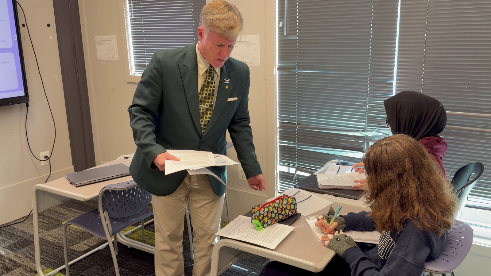
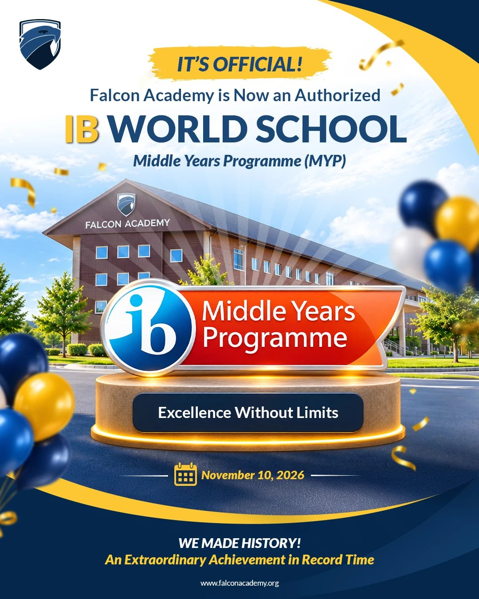
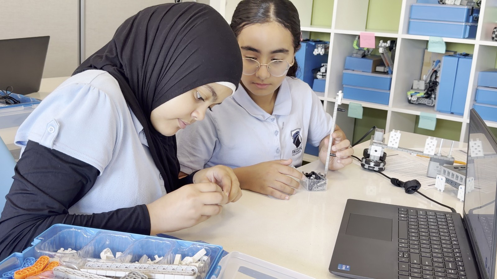
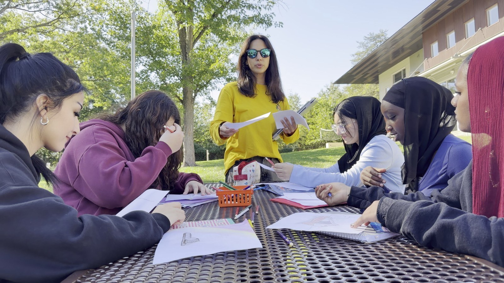
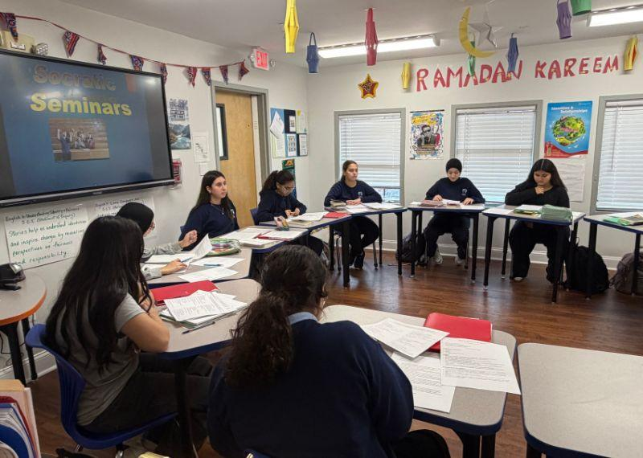
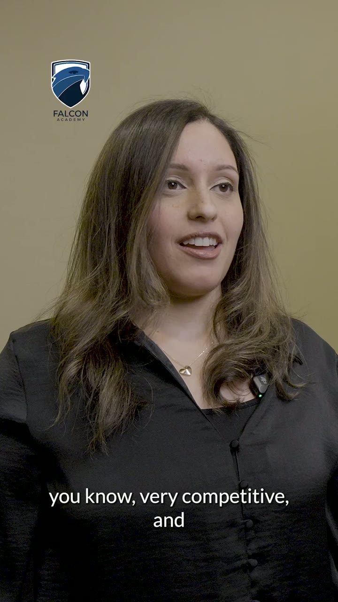

KG – G12 Islamic School
Chantilly & Ashburn, VirginiaIB Inquiry. AP Rigor. An Associate Degree in High School.
An IB World School for the Middle Years Programme (MYP), with 8 AP courses and up to 60 college credits through NOVA.
Book a TourTours every weekend at both campuses
Watch Our Campuses
Two Campuses, One Falcon Family

Chantilly CampusExplore the Campus

Ashburn CampusExplore the Campus
- Siblings at Different CampusesBrothers and sisters who study at different campuses
- Living Near the Other CampusStudents who live near one campus and attend the other
The best way to know Falcon is to see it for yourself. Book a Tour
Coming Up
Full Calendar ›- Thanksgiving BreakWed – Fri, Nov 25 – 27 · No school
- Teacher Work DayMon, Nov 30 · No school for students
- Winter BreakDec 21 – Jan 1 · No school
- Martin Luther King Jr. DayMon, Jan 18 · No school
Latest News
All News ›
Falcon Academy Is Now an IB World School for the MYP
The IB has authorized Falcon to offer the Middle Years Programme, Years 1 to 5.

Elementary School Fire Department Visit
Our KG – Grade 5 students learn about fire safety and community helpers.

Sky Zone Trampoline Park Field Trip
Our middle and high school girls enjoy a day of movement, laughter and friendship.
A Day at Falcon
Photos and short films from our classrooms, trips and celebrations.


Explore Our Programs
Three stages from KG to Grade 12, across our Chantilly and Ashburn campuses.
 KG – G5
KG – G5Elementary School
Small classes, strong reading, daily Quran.
Explore ›
G6 – G8Middle School
Eight IB subjects and real-world projects.
Explore ›
G9 – G12High School
8 AP courses and up to 60 college credits.
Explore ›IB, AP and College Credit
IB World School for the MYP, College Board AP, and college credit with NOVA.
Now an IB World School for the MYP
Falcon Academy is an IB World School for the Middle Years Programme (MYP), authorized in November 2026, and a Candidate School* for the Primary Years Programme (PYP). The school is pursuing IB authorization for the Primary Years Programme. IB World Schools share a common philosophy—a commitment to high quality, challenging, international education that Falcon Academy believes is important for our students.
Falcon Academy is also a Candidate for Accreditation with NCA CASI, NWAC and SACS CASI.
Accreditation DetailsCollege Board Approved AP Courses
8 College Board AP courses and 22 Honors courses, approved at Level I and II. Each AP course ends with the AP exam in May. Explore AP Courses Associate degree pathwayCollege Credit from Grade 9
Four NOVA Associate of Science tracks (Engineering, IT, Medical, Business), with up to 60 college credits. Explore the Pathway*Only schools authorized by the IB Organization can offer its programmes. Candidate status gives no guarantee that authorization will be granted. The associate degree is an optional goal and is not guaranteed.
Why Families Choose Falcon
Small classes, Islamic values every day, and a clear path to college.
 01A Community Built by ParentsFounded by the King Abdullah Academy community
01A Community Built by ParentsFounded by the King Abdullah Academy communityIslamic values guide the school day. When King Abdullah Academy closed, its parents and alumni built Falcon to keep a 40-year community together and raise the academic bar for the next generation.
Read Our Story 02Learning by DoingReal projects, challenges and service days
02Learning by DoingReal projects, challenges and service daysStudents build, test and present real projects in teams, take part in challenges like KidWind, and lead service days in the community.
03Personal Attention for Every ChildAbout 10 students for every teacher
With about 10 students for every teacher, lessons are adjusted to where each child is. Teachers notice early when a child needs help or a new challenge, and every teacher who joined in our first year is a co-owner of the school.
Meet Our Faculty 04Clubs After School and on WeekendsSTEAM, cooking, art and more
04Clubs After School and on WeekendsSTEAM, cooking, art and moreWeekday and weekend clubs such as STEAM challenges, cooking and art, after the school day ends.
Weekday ClubsWeekend ClubsClubs and After School
05IB Learning With Islamic ValuesIB inquiry, with Quran and prayer every dayFalcon is an IB World School for the MYP and an IB Candidate School* for the PYP. Students learn through the IB inquiry approach, and prayer, Quran and Islamic Studies are part of every school day.
How We Teach 06A Safe, Modern CampusSecure buildings and a fenced play area
06A Safe, Modern CampusSecure buildings and a fenced play areaClassrooms set up for group work, a large outdoor playground and a basketball court. How we keep students safe:
Locked DoorsFenced Play AreaOn-Site SecurityOur Campuses 07A School Built to LastFinancially stable, with a five-year plan
07A School Built to LastFinancially stable, with a five-year planFalcon is financially stable, led by experienced entrepreneurs, and follows a five-year academic plan that prepares students for college.
In Their Own Words
Falcon parents answer the questions families ask us most.

What is it like to be a student at Falcon Academy?Falcon parent How does it feel to be part of Falcon Academy?Falcon parent
How does it feel to be part of Falcon Academy?Falcon parent How does our community make learning at Falcon distinctive?Falcon parent
How does our community make learning at Falcon distinctive?Falcon parent What inspires parents to enroll their children at Falcon?Falcon parent
What inspires parents to enroll their children at Falcon?Falcon parent
Thinking About 2027–28?
Come see Falcon for yourself. Tours run every weekend at both campuses.
Book a TourHow to Apply